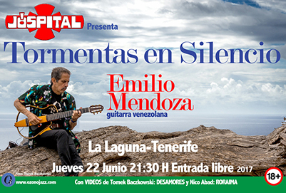

Emilio
Mendoza Guardia
Compositor, guitarrista,
investigador
• Composición de Música Ecológica, Nueva Música,
Jazz | Video-Arte, Performances,
Instalaciones,
| Danza
• Ejecución y enseñanza de la Guitarra | Bandola llanera
• Investigación sobre Silencio | Música Folklórica & Popular de Venezuela | The Beatles | Música Visual | Ritmo & Sexo | El compositor en la sociedad
• Ejecución y enseñanza de la Guitarra | Bandola llanera
{kind=link}
• Investigación sobre Silencio | Música Folklórica & Popular de Venezuela | The Beatles | Música Visual | Ritmo & Sexo | El compositor en la sociedad
|

Jóspital, La Laguna, Tenerife, junio, 2017
Residencia de investigación A/V en el ZKM, Karlsruhe, octubre, 2013, con una beca de la DAAD  Concierto con el grupo Catálysis, Liceo San José de Los Teques, junio 1973 |
|
emiliomen [at] gmail.com |
https://ozonojazz.com/emilio/ |
Cel.: +58 424 257 3245 |
© 2019 Copyright por Emilio Mendoza , Todos los Derechos Reservados
Prohibida su reproducción sin la autorización previa del autor